Code is the easy part
Umer Salman
TMI 2026
Agenda
Who I am and what we build
From running programs to systems that move
Modularity
Q&A
Who am I?
-
 , San Antonio, TX
, San Antonio, TX
- BS ECE from
- 3-person team supporting ~60 mission apps
- Robotics, cybersecurity, and data systems
- PHP since the Nintendo DSi
What We Build
Data analysis and operations tools for NASA and ESA missions
Many apps, small team, high reliability requirements
So there's a lot of architecture choices (DevOps)
What This Looks Like in Production
At the end, I will show real mission applications
Same core platform patterns, different mission outcomes
That reuse is how a 3-person team supports many systems
Programs Run
Write code
Run it
Get output
Debug locally
Programs Move
Code moves (dev → CI → production)
Data moves (raw → processed → insight)
Events move (messages between systems)
Modern software is movement, not just execution.
Your Code Travels Before It Runs
Local machine != production
CI/CD pipelines
Rollbacks and reversibility
Security constraints (you cannot run anything anywhere)
What could go wrong between your laptop and production?
Move Software to the Data
Some data is ITAR/CUI, or simply too large (500+ PB)
Moving data can be slow, expensive, or disallowed
So we move software to where data already lives
Containers and cloud patterns make that possible
Nothing Runs in Order Anymore
Systems react to events (messages, queues)
No single main program
Things happen asynchronously
Events can be delayed, duplicated, or out of order
What happens when your system cannot assume timing?
Tools Should Fit Inherited Infrastructure
Docker (Podman for us)
Git (Gitea for us)
Sentry (GlitchTip for us)
Web server (FrankenPHP for us)
Goal: support what exists without overcomplicating
Modularize or Struggle
We cannot rebuild every feature per mission
Generic Conference and Generic SOC are shared modules
One code path, many mission deployments
Computer Scientist vs Computer Engineer
Our ingest software keeps huge datasets in RAM
Need more capacity: improve software or double RAM?
Best answer balances correctness, time, cost, and risk
Outsourcing Reasoning
AI now assists with code, pipelines, and design
PyScript/WASM also expands where code can run (including clients)
We increasingly run code we did not fully write
Trust Is Part of the Architecture
XZ Utils backdoor
Hidden inside a trusted dependency
Took years to insert
Almost shipped into critical systems
More automation and abstraction increase both reach and risk
The Shift
You are not just writing programs
You are designing flows of code, data, and events
Hard part: keeping systems reliable as they move
How Far Software Movement Goes
Example: move execution to the browser with PyScript/WASM
PyScript
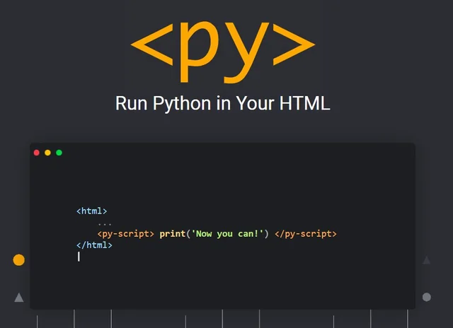
WASM
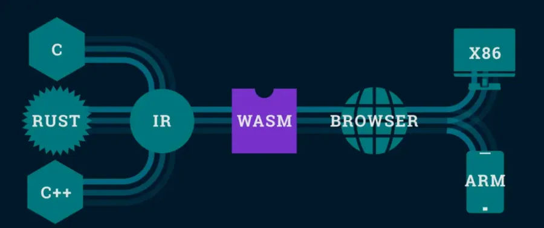
GeoViz v2.0
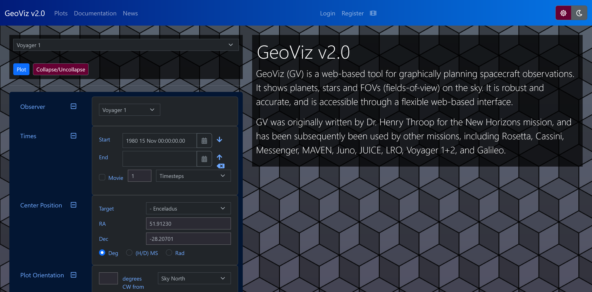
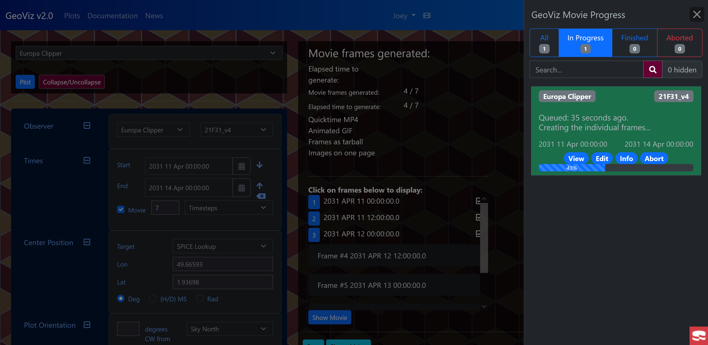
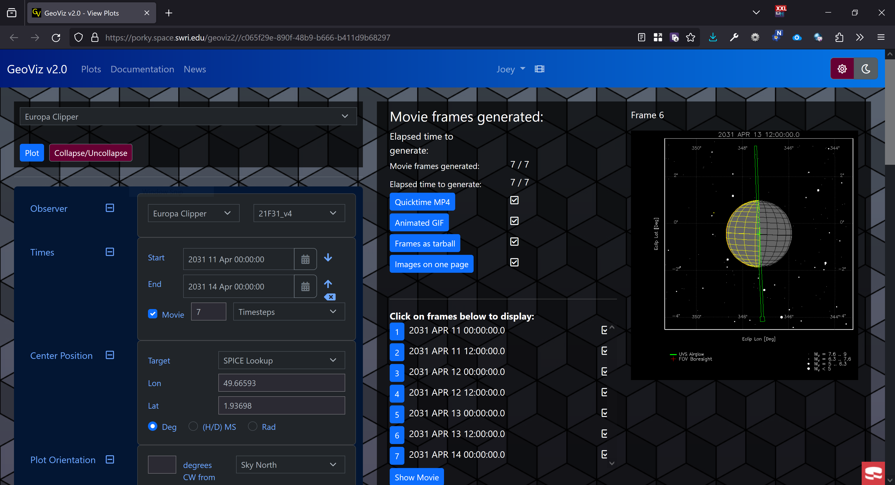
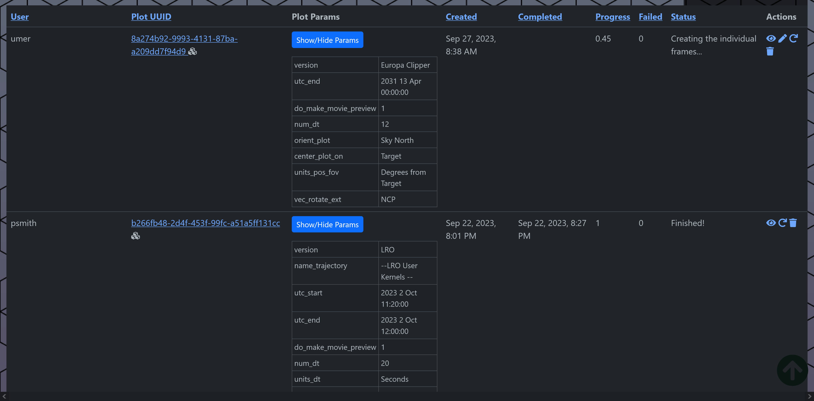
Hot Plasma Composition Analyzer (HPCA)
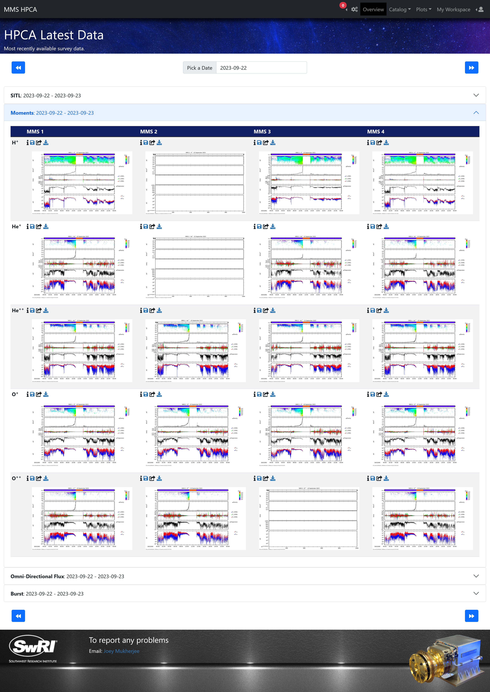
Generic Conference
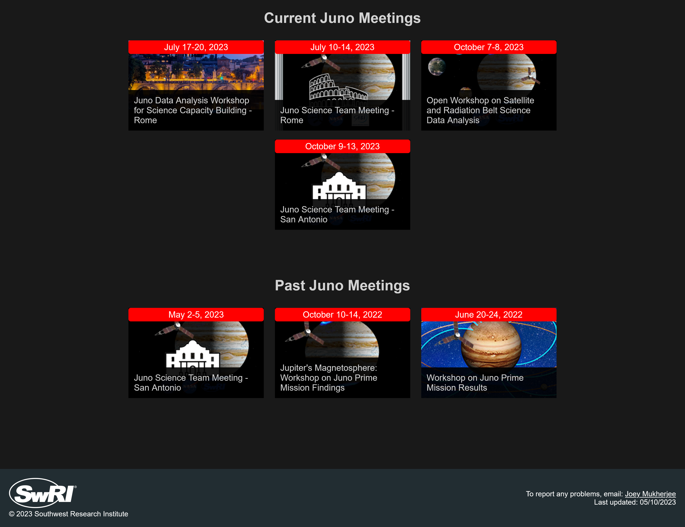
Generic Conference
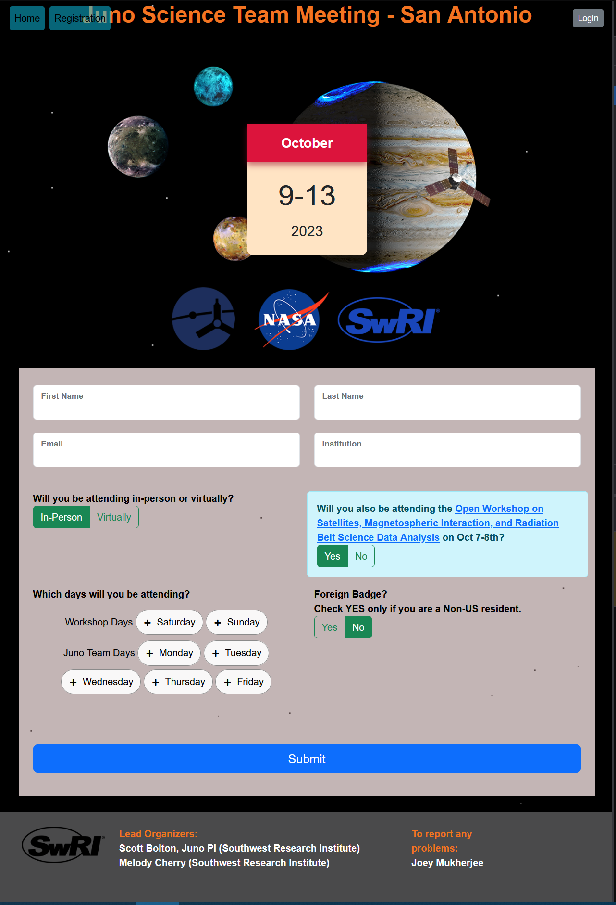
Generic SOC (Write Once, Reuse Across Missions)
Shared SOC core with mission-specific configuration and adapters.
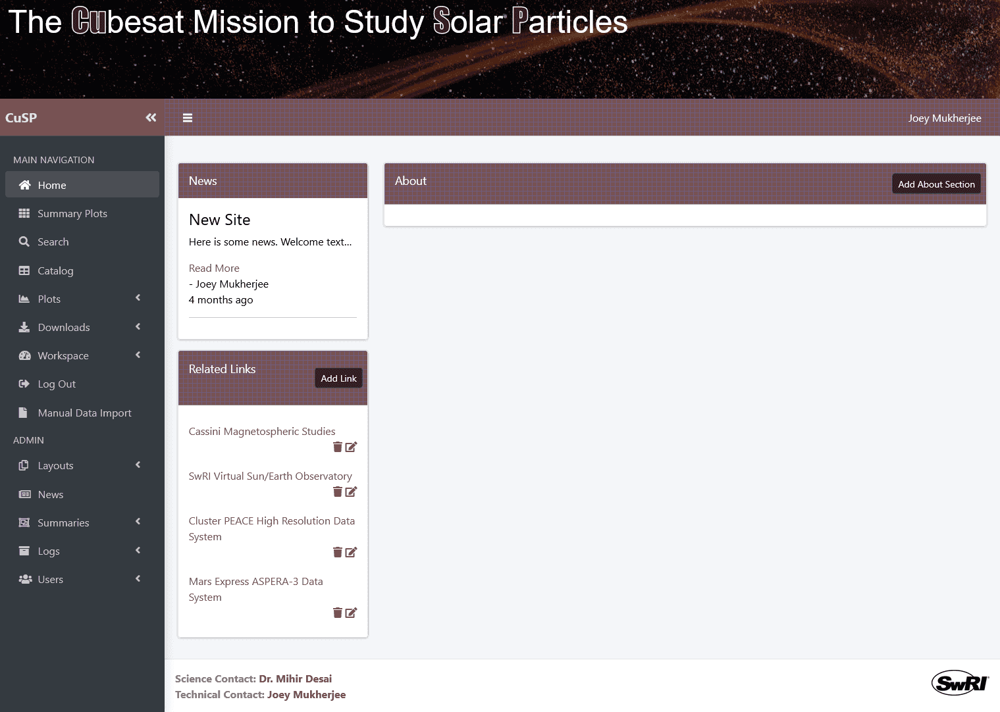
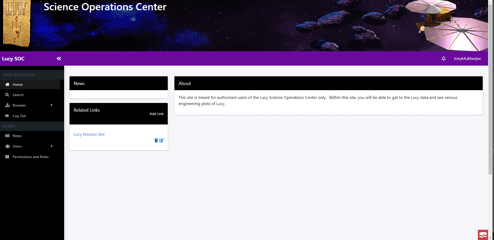
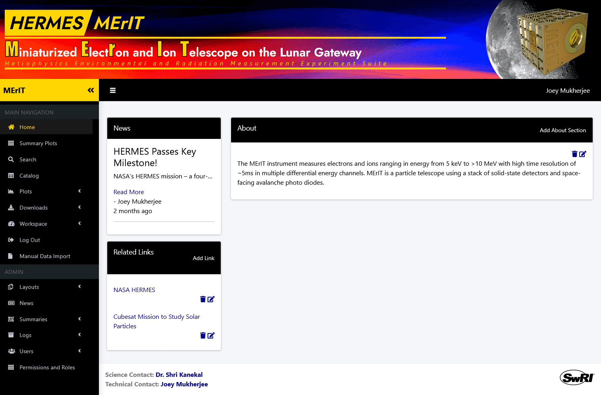
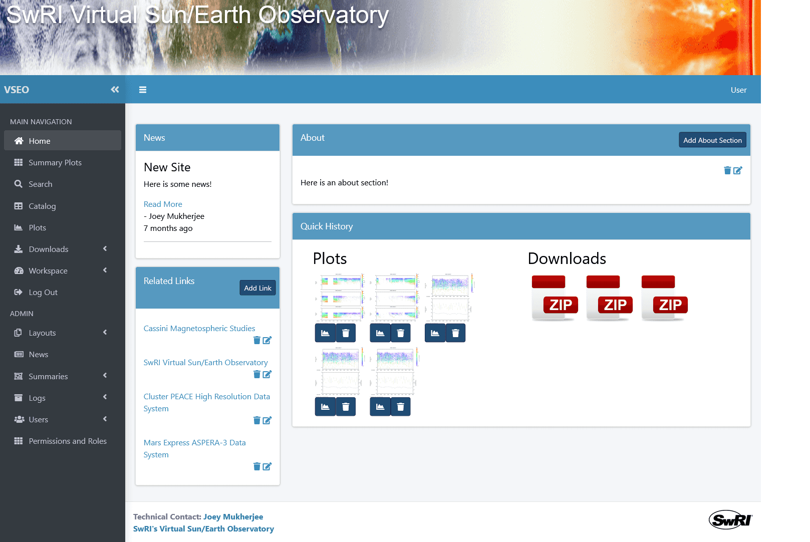
What All This Gets Us
Faster delivery without cloning entire stacks
Consistent operations across missions
Room to adopt new ideas like PyScript and WASM safely
https://umer936.com/TMI-2026/
https://github.com/umer936